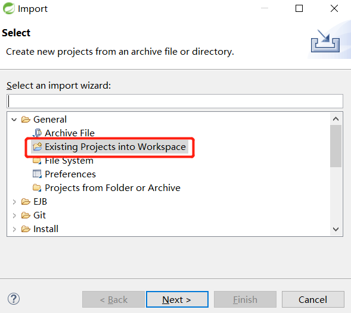
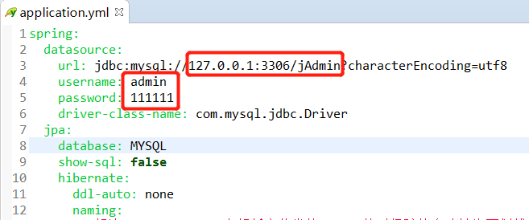
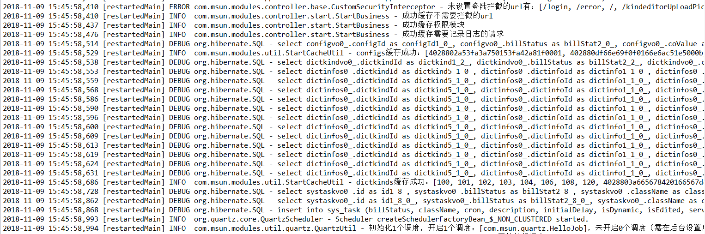
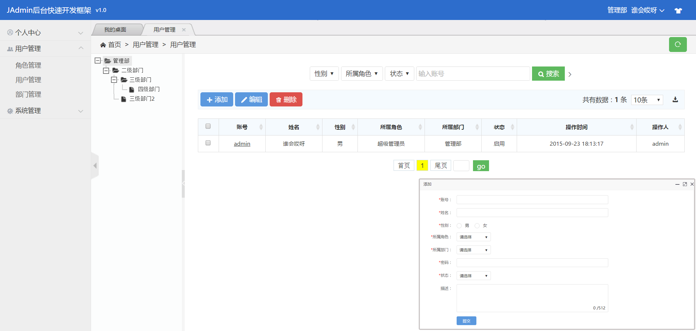

JAdmin 是一个基于Java语言的快速开发平台，数据库表创建后，只需5分钟就能开发一套后台管理系统。无需JSP，一个Controller，一个JavaBean，就可以实现数据的增删改查。 文本框、单选、多选、图片组件、日期组件、富文本编辑器、坐标选取等等……一个注解轻松搞定。友好的代码结构及注释，便于阅读及开发。
请认真阅读JAdmin所需的环境，給据自身情况，下载对应的版本及工具。
第一步：JAdmin 基于Spring Boot，建议大家使用STS（官方开发工具）或者IDEA（均可开发Spring Boot项目），或者你也可以在Eclipse上安装Spring Boot插件；
第二步：JAdmin 使用了Lombok插件（Lombok可以减少很多重复代码的书写，比如说getter/setter的编写），建议用户安装Lombok插件。如果无法安装Lombok，可以下载 JAdmin无Lombok版；
第三步：JAdmin 必须要有数据库支撑，JAdmin标准版使用的是Mysql数据库。
JAdmin无Lombok版 下载：下载文件整理中……
如果你没有Spring Boot环境，或者不想自己安装Lombok，建议先下载JAdmin环境完整版：下载文件整理中…… ，包含：STS(V3.9.4)+Lombok插件(V1.16.22)+快速开发插件1.0）
得到JAdmin的开源包，下载后的结构（也就是你获得的源代码）如下：
├─doc │ └─jAdmin.sql //数据库文件 ├─src │ ├─test //测试代码 │ └─main │ ├─java //java源代码 │ ├─resources //静态资源文件 │ │ └─static //css、js、image等文件 │ │ └─application.yml //项目配置文件 │ │ └─logback.xml //日志配置文件 │ └─webapp │ └─WEB-INF │ └─jsp //JSP文件 │ └─org.tld //JSP自定义标签配置文件 ├─target //编译文件 └─pom.xml //maven配置文件
第一步：打开IDE，导入JAdmin项目
JAdmin源码不包含jar包，项目初始化时，maven需要时间下载所需jar包，请耐心等待，建议将maven仓库地址修改为阿里。
第二步：导入mysql基础表，数据库文件是doc/jAdmin.sql
第三步：修改application.yml的数据库连接
第四步：打开WebApplication类，右键Run As Java Application
如果控制台最后打印上述信息，表示启动成功
第五步：打开浏览器，访问：http://127.0.0.1:8080，用户名：admin，密码：111111
JAdmin 基于以下开源框架，再次感谢 核心框架：Spring Boot 2.0.3 视图框架：Spring MVC 5.0.7 持久层框架：Hibernate 6.0.10 定时器：Quartz 2.3 日志管理：Logback 1.2.3、Log4j 前端框架：Hui.admin V3.1 （感谢jQuery、layer、laypage、Validform、UEditor、My97DatePicker、iconfont、Datatables、WebUploaded、icheck、highcharts、bootstrap-Switch）